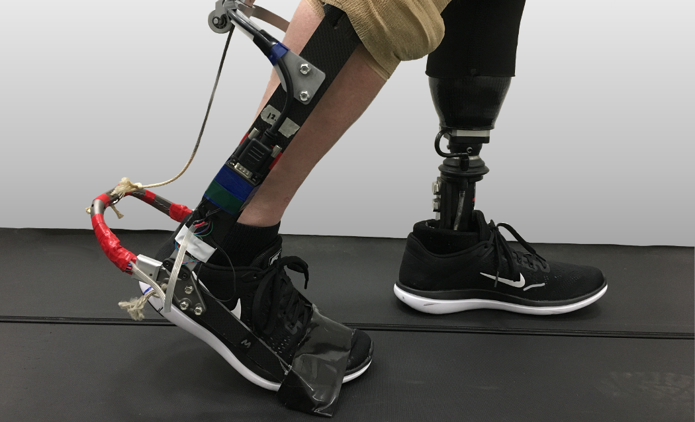

Healthy volunteers and individuals with movement impairments are welcome to participate in our studies.

Rehabilitation and Augmentation Lab · Department of Mechanical and Aerospace Engineering · University of California, Irvine
The long-term goal of this study is to understand how people with unilateral transtibial amputation learn to use assistive devices, such as ankle exoskeletons. By studying how people adapt and move with these devices, we hope to find better ways to support their walking and improve rehabilitation training.
In this experiment, you will be asked to come into the Rehabilitation and Augmentation Lab, located in the Engineering Gateway Building, at the University of California, Irvine. You will be asked to walk on a treadmill while wearing an ankle exoskeleton on your intact leg. We will place sensors on your legs and body to record how you walk. You will also be asked to wear a mask over your head to measure your breathing. Experiments may last up to 4 hours, including up to 60 minutes of total walking with breaks.
Taking part in this study may or may not improve your walking and balance. While the research team hopes that training with the assistive devices improves your motor learning abilities, there is no guarantee of this occurring. This study will help researchers learn more about motor learning mechanisms that can be improved by wearable robotic devices for better gait training and rehabilitation. We hope that information from this study will lead to improved technologies for individuals with disabilities affecting locomotion. Improved robotic device technology may be developed as a result of this study, which might, at some point in the future, result in better commercial exoskeleton products available for you to purchase.
Participants will be compensated $25/hour for their participation.